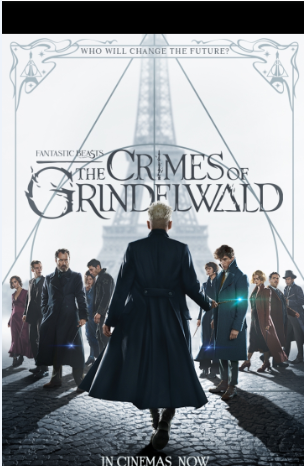
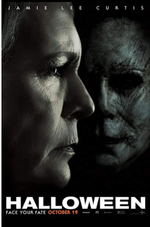
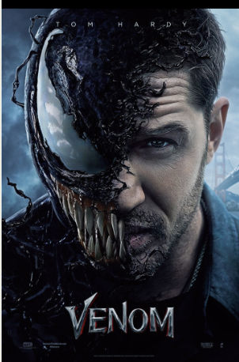
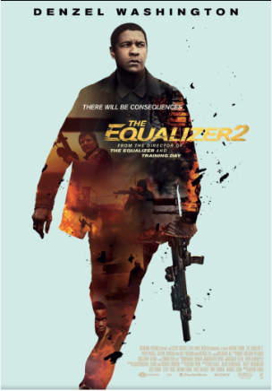

HOME
Fantastic Beasts : The Crimes of Grindewald

- Genre : Adventure , Family , Fantasy
- Release date : 16 November 2018
- Language : English
- Country of Origin : UK , USA
- Some description about movie :
Fantastic Beasts: The Crimes of Grindelwald is a 2018 fantasy film directed by David Yates and written by J. K. Rowling.
A joint British and American
production, it is the sequel to Fantastic Beasts and Where to Find Them (2016).
It is the second instalment in the Fantastic Beasts
film series,
and the tenth overall in the Wizarding World franchise, which began with the Harry Potter film series.
The film features an ensemble cast that
includes Eddie Redmayne, Katherine Waterston, Dan Fogler, Alison Sudol, Ezra Miller, Zoë Kravitz, Callum Turner, Claudia Kim, William
Nadylam, Kevin Guthrie, Jude Law, and Johnny Depp. The plot follows Newt Scamander and Albus Dumbledore as they attempt to take
down the dark wizard Gellert Grindelwald, while facing new threats in a more divided wizarding world.
Halloween

- Genre : Horror, Thriller
- Release date : 19 October 2018
- Language : English
- Country of Origin :
Some description about movie :
Exactly 40 years after the massacre depicted in 1978's Halloween, killer Michael Myers (Nick Castle/
James Jude Courtney) continues his
silent incarceration. And survivor Laurie Strode (Jamie Lee Curtis) continues her single-minded preparation for his return. Laurie's estranged
daughter, Karen (Judy Greer), thinks she's crazy. Laurie's granddaughter, Allyson (Andi Matichak), wants to reconcile the family rift but has
her own teen problems. And Michael is finally ready to let his blade (and hammer, and poker, and whatever) speak. Happy HALLOWEEN!
Venom

- Genre : Action , Sci-Fi
- Release date : 5 October 2018
- Language : English
- Country of Origin : USA , China
- Some description about movie :
Venom is a 2018 American superhero film based on the Marvel Comics character of the same name, produced by Columbia Pictures in association with
Marvel and Tencent Pictures. Distributed by Sony Pictures Releasing, it is the first film in Sony's Marvel
Universe, adjunct to the Marvel Cinematic Universe .
Directed by Ruben Fleischer from a screenplay by Scott Rosenberg, Jeff Pinkner, and Kelly Marcel, it stars Tom Hardy as Eddie Brock /
Venom, alongside Michelle Williams, Riz Ahmed, Scott Haze, and Reid Scott. In Venom, journalist Brock gains superpowers after being
bound to an alien symbiote whose species plans to invade Earth.
Equalizer 2

- Genre : Action , Crime , Thriller
- Release date : 20 July 2018
- Language : English , French , Turkish , Hebrew
- Country of Origin : USA
- Some description about movie :
The Equalizer 2 (sometimes promoted as The Equalizer II or EQ2) is a 2018 American thriller film directed by Antoine Fuqua. It is the sequel
to the 2014 film The Equalizer, which was based on the TV series of the same name. The film stars Denzel Washington, Pedro Pascal,
Ashton Sanders, Melissa Leo, and Bill Pullman. It follows retired United States Marine and ex-DIA agent Robert McCall as he sets out on
a path of revenge after one of his friends is killed. The film is the fourth collaboration between Washington and Fuqua, following Training
Day (2001), The Equalizer (2014), and The Magnificent Seven (2016).